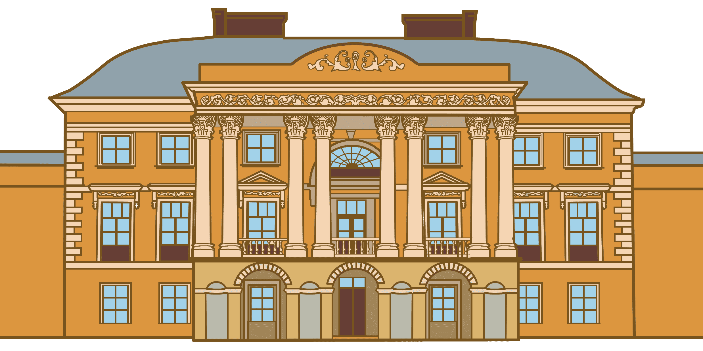
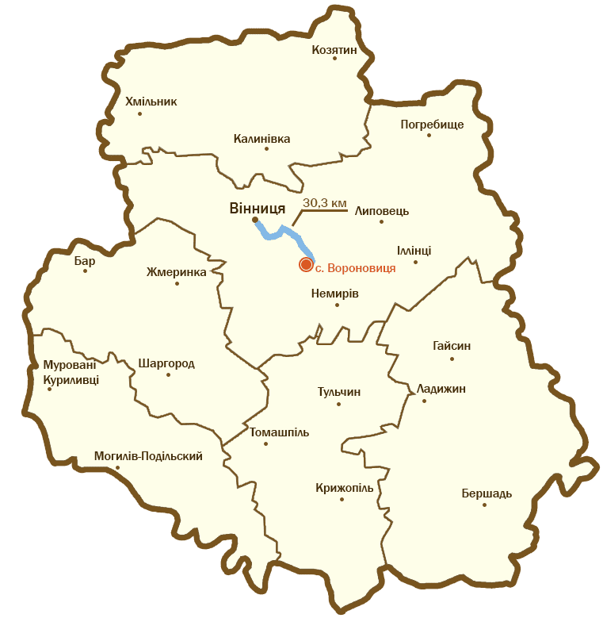

Загальні відомості
Палац Грохольських-Можайських — комплекс споруд кінця XVIII століття, визначна історична і архітектурна пам'ятка садибної архітектури на теренах України доби класицизму. Розташований у селиці Вороновиця, неподалік Вінниці.
У 70-х роках XVIII стотіття Францішек Ксаверій Грохольський сприяв будівництву на місці старого маєтку великого палацу. Палац було побудовано в стилі раннього класицизму, в 1770–1777 рр. Стилістика будівництва запозичені із італійської архітектурної доби Андреа Палладіо — палаци з легко вигнутими бічними крилами. Схема палацу — головний об'єм палацу з портиком та фронтоном, який доповнюється бічними галереями, що закінчуються павільйонами. Автором проекту був архітектор Лоренц Гедон.
Історія
Онук Франциска Горохольського — Адольф був учасником Листопадового повстання 1831 р., яке закінчилося поразкою. Як покарання Адольф Горохольський був засланий до Сибіру, але через пару років повернувся і зумів зберегти маєток від конфіскації. Після смерті Адольфа палац перейшов до його брата Людгарта, учасника нового польсько-визольного повстання 1863 року, після якого російський уряд конфіскував садибу Вороновиці, а його самого від арешту та Сибіру врятував козак Іван Містота.
За новим законом російського уряду від 1865 р. маєтки в Україні мали право купувати тільки російські підлеглі. Палац в Вороновиці придбав Микола Можайський (брат Олександра Можайського).
За часів СРСР частка приміщень використовувалась як школа, частка — як музей історії авіації.
Хоча садиба Грохольських перебудовувалася, в ній все одно простежувалися риси замку. В середині маєтку були такі зали: чорний, арабська, турецька, їдальня, помпейский, гербовий. Крім того, в садибі була величезна бібліотека, де зберігалися 10 тисяч томів французькою, англійською та польською мовами, колекція лицарських обладунків та зброї. На території маєтку стояла стайня для породистих коней.
Зовнішній вигляд
На малюнку видно всю витонченість в архітектурі тієї доби: орнамент, деталізація, нагромадження, колони, балюстради, капітелі – чіткі ознаки класицизму.
Триповерховий об'єм палацу є центром композиції маєтку. Він розташований на найвищому пагорбі місцевості. Фасад та інтер'єри виконані і стилі класицизму. Фасади під дахом прикрашений рельєфним фризом з гірляндами та букраніями. В приміщенні розташовано 43 кімнати. Збережені історичні інтер'єри круглої та овальної зали. Парк за палацом збережений частково.
Палац у Вороновиці був збудований коштом Францішека Грохольського на зразок підкови. Після революції 1917 р. головний корпус палацу та праве крило були перебудовані. В багатьох залах стіни були покриті мозаїкою, у деяких шовком чи атласом. Й. Грохольський привіз e Вороновицю з Терешок на Волині (Cтарокостянтинівський повіт) колекції свого брата Антонія. Під час свого подорожування за кордоном (в Римі та Ліворно) Антон Горохольський придбав п'ятсот дев'ятнадцять (519) картин фламандських, голландських, французьких майстрів, також Тиціана або майстра — учня його майстерні.
Позаду палацу та по боках був закладений парк, спереду був газон. Головна липова алея йшла півколом. Друга алея йшла від озера. Разом з парком був закладений і овочевий город та ділянка фруктового саду, що було звичним в сільських садибах 17-18 ст. Неподаліку від палацу був костел, також збудований коштом Франциска Горохольського. При палаці існували господарські споруди і козацькі стайні на 100 коней.
Як дістатися
Адреса палацу: вулиця Козацький шлях, 26, Вороновиця, Вінницька область
До палацу можна дістатись як автобусом, так і автомобілем.
На рисунку показано, як доїхати від Вінниці до с. Вороновиця. Як видно, дорога займає 30.3 км і майже півгодини, що є не критичним, тому є можливість подивитися на історичну спадщину в реальному житті.
